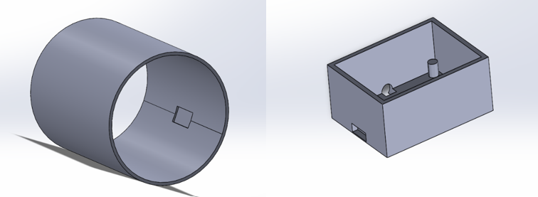

Solid-State Continuous Blood Pressure Monitor
Utilizing active material actuation and pulse wave analysis to replace pneumatic systems[cite: 251, 255].
The Objective
Standard pneumatic cuffs provide only intermittent data points, creating a significant sampling gap in clinical monitoring. This project designed a continuous non-invasive blood pressure (CNIBP) monitor using an active-material elastic sleeve and embedded piezo-electric sensors to track pulse wave amplitude in real-time[cite: 254, 255, 256].
1. Analog Front-End (AFE) Design
Piezo-electric transducers generate high-impedance charge signals proportional to arterial displacement[cite: 260]. To prevent signal loading, I configured an LMP7721 precision amplifier as a charge-to-voltage converter[cite: 261]. The feedback network of $R_{t}=300\text{ M}\Omega$ and $C_{t}=10\text{ nF}$ provides hardware AC-coupling, effectively eliminating DC offset and sensor hysteresis.

Fig 1: LMP7721 Charge Amplifier circuit and AC Analysis Bode plot showing 0.1 Hz cutoff[cite: 263, 266, 291].
2. Digital Logic & Patient Safety
The system executes a deterministic 100 Hz sampling routine via Timer1 Interrupts to calculate real-time pulse amplitude[cite: 256, 294]. I utilized digital environment testing to develop a closed-loop control system that manages actuation hysteresis and sensor drift via a dual-threshold deadband[cite: 257, 312].
Hardware Fail-Safe: Given the compressive nature of the active material, I integrated a hardware Watchdog Timer (WDT) with a 500ms timeout[cite: 257, 323]. In the event of a software hang, the WDT triggers a global hardware reset, clearing the PWM output to 0% and relaxing the cuff to ensure patient safety[cite: 324, 325].
3. Mechanical CAD Integration
The mechanical build relies on a multi-layer architecture designed in SolidWorks. The inner thermoplastic polyurethane (TPU) sleeve features recessed pockets to ensure a flush, zero-gap mechanical coupling with the skin[cite: 298, 299, 300]. Actuation is driven by Shape Memory Alloy (SMA) wires routed along a rigid polymer spine, converting linear contraction into uniform circumferential pressure[cite: 301, 302].

Fig 2: CAD renders of the TPU Inner Sleeve and the integrated Control Pod[cite: 305, 309].